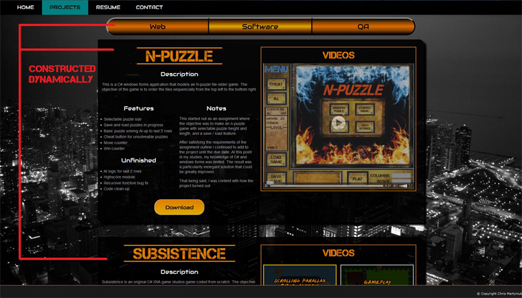

N-Puzzle
Description
This is a C# windows forms application that models an N-puzzle tile-slider game. The objective of the game is to order the tiles sequencially from the top left to the bottom right.
Features
- Selectable puzzle size
- Save and load puzzles in progress
- Basic puzzle solving AI up to last 2 rows
- Cheat button for unsolveable puzzles
- Move counter
- Win counter
Unfinished
- AI logic for last 2 rows
- Highscore module
- Recursive function bug fix
- Code clean-up
Notes
This started out as an assign`ment where the objective was to make an n-puzzle game with selectable puzzle height and length, and a save / load feature.
After satisfying the requirements of the assignment outline I continued to add to the project until the due date. At this point in my studies, my knowledge of C# and windows forms was limited. The result was a particularily inelegant solution that could be greatly improved.
That being said, I was content with how the project turned out.
Videos
Subsistence
Description
Subsistence is an original C# XNA game studios game coded from scratch. The objective of the game is to live as long as possible. The game progresses through a night and day cycle. Each day the enemies become stronger, and the enemies at night are stronger than the enemies that spawn during the day. Leveling up restores your health and makes your character stronger. When you die a score is calculated based on your level, and the length of time that you survived.
Features
2D Graphics
- Animations
- Parallax Scrolling
System Engines
- Functional HP(health), MP(magic power), and XP(experience points) based leveling game mechanic engine
- Functional hotkey-based ability swap engine
- Cyclical day and night environment-altering game progression engine
Music
- Original Title Screen music wirtten by myself; created with Frooty Loops Studio
GUI
- Dynamic HP, MP, and XP bar display
- Hotkey-based ability hotbar interface
- Day / night graphical timer display
- Main Menu Interface
Basic Enemy AI
- Enemies detect player position
- Enemies decide when to use their attacks and their abilities have cooldown timers
Physics
- Rigid body collision detection
- Basic velocity altering object collision simulation
Notes
This game has a lot of unused potential. It was meant to be much larger in scale with many more features, and more use from the existing ones.
I discontinued work on the game after I demo'd it as my final project for a game programming class where I signed a waiver transfering ownership of the source code to the college.
Videos
Screenshots
Pathfound
Description
Pathfound is an online platform for playing tabletop games like Dungeons and Dragons or Pathfinder. This website was my capstone project for the program Information Technology Innovation and design (ITID) at Conestoga college. I created this website from scratch and won the 2018 Capstone Project Award for IT programs at the Conestoga Capstone Competition.
Features
Persistent Users, Persistent Games
- The website is backed by a mySQL database. Users create accounts and login just like you would anywhere else. Users can create game rooms and join them at anytime. The gameplay and information in each game room is preserved even when nobody is playing, so you can pick back up and jump back into the game at anytime.
Real-time DOM Updates Served to Multiple Clients Simultaneously
- Any updates made to the game room will autonomously update the DOM in real-time for all clients connected to that game room.
Multiplayer
- When users create a game, the game room is added to their joinable game list and they are given a game code to share with other players. Other users can join the game using the game code and it will be added to their list of joinable games too.
Unlimited Games, Unlimited Gametime
- At this point, no games are ever deleted, and there is no limit on how many games you can be apart of at any time.
Many Additional Features
- Dice rolling engine with chat output.
- Responsive design. You can play on your computer, tablet, phone, or any device with a browser.
- Multiple interchangeable game room views and layouts.
- Much more.
Real-time Persistent Chat
- I wrote my own real-time chat using javaScript, PHP, and SQL. Each game room has its own chat where users can talk with each other in real-time. The chat logs are preserved forever allowing the history of each game to be preserved, similar to a facebook messenger group chat.
Interactive Gameboard
- The gameboard is fully interactive. It allows you choose map images, customize the size, place/remove character, NPC, item, and object token on the map grid, then move them around as you please. Updates to the gameboard are served to all clients in the room in real-time.
Player Uploaded Assets
- Players can upload their own assets to use for their games and accounts. They can upload character, NPC, item, object, and enemy tokens to be placed on the board. They can also upload their own maps to play on. These assets are hosted on the server and remembered for each user so they can easily add their uploaded assets to any game in the future.
Player Character Database
- Tabletop game characters are complex with many stats and attributes to keep track of. Pathfound tries to streamline that process, allowing users to create, update and edit characters through a character builder form. The users characters are stored on their account so they can easily be updated, retrieved, or added to a game at any time. Important character stats are displayed in the active character tab in the game room.
Conestoga Capstone Award 1st Place
This web application won first place for IT capstone projects at the 2018 Conestoga College Capstone Competition. This was a milestone accomplishment for me, not just to win first place, but also to win as the only person competing without a group.
Videos
Create an Account
Create / Join Games
Create / Import Character
Using the Game Room
Uploading Custom Assets
jChris
Description
jChris is a custom website building utility library that I created as an experiement to try and reproduce some of the features of other popular libraries and frameworks with my own code. I used this porfolio as a sandbox for creating and testing jChris. It currently consists of one javaSCript library, and 2 CSS files. jChris is still a work in progress.
Features
Responsive Mobile First Design
- Utilizes CSS3 media queries and screen size based metrics to allow for easy to code websites that look good on all devices
Asynchronous DOM Manipulation
- Basic XML / JSON HTTP request functionality allowing developers to modify the DOM without reloading the browser window.
- Allows easy to code and and create AJAX DOM queries, so you can load specific elements from seperate HTML page, and build a custom DOM in a single call.
Styled
- Comes with easy to learn CCS3 class structures and color themes so you can easily create and style a website an infinite number of ways. Constantly being updated and improved.
Fully Automated Class Widgets
- Contains widget class families that scan the DOM for expected relative nodes, automating the creation of their own event handlers, animations, transitions, and user interactive functionality. No additional internal javaScript coding required.
Enhances JavaScript Readability / Reuseability
- Many basic, commonly used javaScript functions have been repackaged, combined and / or renamed, into small, easily readable, higihly reusable jChris utility functions. These are designed to preform commonly required functionality, but are more efficient and less tedious to code.
Cross Browser Compatibility
- Utility functions often check for potential browser compatibility issues and automate alternative execution strategies and/or implement polyfill prototype work-arounds.
Transition / Animation Classes and Functions
- Offers a small selection of animation / transition classes and functions, bypassing the hassle of manually coding them from scratch.
- Built in animation and transition DOM manipulation interaction functions. Asynchronously modify the dom and transition in a single function call.
Function Chaining
- Inheritence prototyping passing the object back into its constructor after execution allows for chained function calls to allow faster and sometimes more readable coding.
- Example: jC('#id').addClass('selected') .showElement() .hide()
- Above example adds a class to an element with an id of 'id', then displays the element, then hides it.
Highlighted Skills Learned
Responsive Design
Building my own responsive CSS3 framework from scratch has greatly improved my understanding of media queries, effective HTML structuring, CSS property implications, mobile first design philosophy, and the inner mechanics of the HTML box model.
AJAX Dynamic Web Pages
This was possibly my biggest motivation for writing this library. AJAX is becoming very popular in modern web development and I thought it would be important to learn how to implement my own AJAX functions in vanilla javaScript. I believe there are a lot of people in my program who are using AJAX through tools like jQuery, jQuery mobile, and Bootstrap who either don't know that they are doing it, or have no idea how it works or what it is doing (the same could be said about responsive CSS).
Cross Browser Compatibility
With all the incredible frameworks and libraries available today, cross browser testing is almost a thing of the past now. I wanted to make sure that my library was tested on and compatible with IE11, firefox, and chrome at the very least. Using no shims, and no external compatibility assisting libraries I have minimized most of the issues that I have encountered, and learned a lot of about each browsing platform in the process.
jChris Example Function
AJAX DOM Construction Query
Code
jC.ajaxQuery(element, url, key, pushBrowserState, jChrisEvents)
element(String) : Specify the element you will insert the new DOM segment into. jChris supports selector notated strings. Example: '#elementId' will search for a node object with an ID of elementID. Similarly '.myClass[0]' will find the first node in the document with a class of 'myClass'.
url(String) : Specify the url of the file you want select nodes from. Example : 'projects.html'. Currently supports files in the same directory only.
key(String) : When creating your html files, you need to notate areas that you might want to use in a DOM query by using comment tags in this format:
'<!--keyIdentifier--> Your HTML code will be here <!--//keyIdentifier-->'.
When you make the key you separate each object you wish to add with a '|'. If you want to build a new div between two objects you can open it using this syntax 'jC[id=idName]' and close it like this 'jC[/idName]'. Here is an example key:
'heading|projectSelect|jC[id=projects]|webProjects|jC[/projects]'.
pushBrowserState(Boolean) : Specify whether or not the browser should update the new DOM state into browser history. Assumes false if left undefined.
jChrisEvents(function) : If you want to define custom event handlers for the new DOM objects you can pass them here. This function will run after the new DOM is fully loaded.
Directly Grab Elements
jC('element').ajax('url').replaceById('elementId')
First element is the target to insert new element into, url is the url to search for the new element's ID, elementID is the ID of the new element.
jChris gets the url's source HTML, and parses the markup as a string, locating the full element before injecting it into the current DOM.
The ajax(url) argument can be replaced by a request object containing a url string, custom events, a custom ajax request call, and a custom request type.
jChris Api Documentation
Under Construction
Notes
jChris is still an unfinished experiment and contains many bugs. I started jChris with a basic knowledge of jQuery, but no experience using any other libraries or frameworks that are rapidly becoming industry standards. I wanted to learn the mechanics behind other libraries and frameworks, so that when I did adopt them, I would be able to understand their capabilities at a more intermediate level.
Since I started this project I have learned a lot and could go back to optimize it far beyond the current build, but I will put it down and advance on to more practical, widely used libraries and frameworks.
Selenium System Testing
Description
This was a two part assignment requiring a web application and a Selenium System Test Suite. I opted to code my test suite by hand instead of relying on the automated Selenium IDE generated code because this was our first exposure to the browser driver object, and I found it quite interesting.
The website should accept form data and store it to a local data store, then present it later and supply links for the entered vehicles to similar vehicles on the jdpower vehicle market website. We needed to test system functionality and validation as a mock user/business acceptance testing scenario. Coded on netbeans IDE 8.1..
Application Features
Basic Data Management via JSON Parsing / Local Storage
- Vehicle information is converted into unique hash string keys and stored in local storage as a string (JSON stringify). It can later be retrieved, JSON parsed back into a complex object, and displayed for the users.
Dynamically Generated Functional Links
- By manipulating user input strings with regular expressions and string functions, user form input data is applied to generate functional links to jdPower website displaying the user's entered vehicle if it exists.
Test Suite Features
NUnit integration
- Selenium translated to C# and fully coded using the NUnit testing class library. All together this assignment made use of HTML, javaScript, CSS, C#, Selenium, NUnit, java, JST, and XML.
Asserts For Expectations and Logs Minor Exceptions
- My test suite does not always end a test case when an expectation is not delivered. Custom soft asserts check for minor bugs that will not crash the system or impede useability, finishing the test case before failing it with detailed exception messages detailing the weak points in the module.
Maps Interactive Nodes
- Constantly updates important user interactive node locations, mapping and binding their position to a page object; ensuring that test cases still operate as intended while the DOM is being updated or rearranged.
Thoughtfully Desgined
- I put a lot of work into designing my test suite. Its easy to pick an expectation and assert for that value, but it is difficult to try and catch potential bugs that you havn't discovered yet. I wrote custom classes, exceptions, and static utility methods that attempt to cover as much area as possible, while imporoving on the readability and coding efficiency of the standard C# Selenium function library.